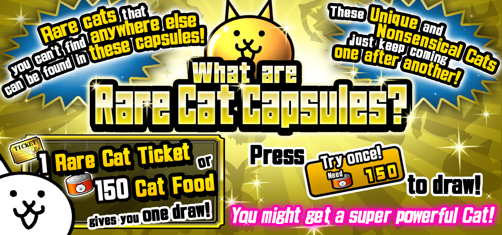

What are Rare Capsules?

About Rare Capsules (premium content)
★ Get 1 Capsule!
→ Cat Food can be used to collect one random character ranked Rare, Super Rare, or Uber Rare.
*Rare Tickets can also be used in place of Cat Food to collect one capsule per ticket.
★ 11 Capsule Draw!!
→ Use Cat Food to draw 11 Rare Capsules at the same time.
Save Cat Food by getting 11 Rare Capsules for the normal cost of 10!
*Rare Tickets cannot be exchanged to receive an 11-capsule Draw.
★ After drawing a capsule, you can choose to either use your prize immediately, store it, or convert it to XP.
Selecting "Use" will take you to the upgrade menu to confirm that you wish to upgrade the ability or unit.
Selecting "XP" will offer you an amount of XP equal to the value of the capsule.
Selecting "OK" will place the capsule in storage for later use.
About Cat Capsule Storage
Save units you receive for later use.
You can view the items in your storage at any time by tapping the button at bottom left of the Capsule menu.
By tapping any unit, you can choose toUse or Convert to XPthe rewards that you have received.
*If your Storage reaches maximum capacity, you will become unable to use the Capsule Machine until enough space is available.